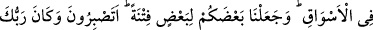
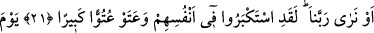

BİZİMLE KARŞILAŞMAYI
UMMAYANLAR
20. (Rasûlüm!) Senden önce gönderdiğimiz bütün peygamberler de hiç şüphesiz
yemek yerler, çarşılarda dolaşırlardı. (Ey insanlar!) Sizin bir kısmınızı diğer bir
kısmınıza imtihan (vesilesi) kıldık; (bakalım) sabredecek misiniz? Rabbin her şeyi
hakkıyla görmektedir.
21. Bizimle karşılaşmayı (bir gün huzûrumuza geleceklerini) ummayanlar: Bize
ya melekler indirilmeliydi ya da Rabbimizi görmeliydik, dediler. Andolsun ki onlar
kendileri hakkında kibire kapılmışlar ve azgınlıkta pek ileri gitmişlerdir.
22. (Fakat) melekleri görecekleri gün, günahkârlara o gün hiçbir sevinç haberi
yoktur ve: (Size, sevinmek) yasaktır, yasak! diyeceklerdir.
23. Onların yaptıkları her bir (iyi) işi ele alırız, onu saçılmış zerreler hâline
getiririz (değersiz kılarız).
“(Rasûlüm!) Senden önce gönderdiğimiz bütün peygamberler de hiç şüphesiz yemek
yerler, çarşılarda dolaşırlardı.” Bu onların peygamberliğine aykırı olmadı. Sen de
onlardan farklı değilsin.
Ey insanlar! “Sizin bir kısmınızı diğer bir kısmınıza imtihan (vesilesi) kıldık;”
fakirleri
zenginlerle,
peygamberleri
kendilerine
gönderildikleri
kimselerin
düşmanlıkları ve eziyetleri ile, hastaları sıhhatli kimselerle, güçsüzleri yüksek mevki
sâhipleriyle, halkı sultanlarla, toplumun alt tabakalarını soylularla, körleri görenlerle,
güçsüzleri güçlülerle denedik
Vâsıtî (r.h.) der ki: “Ele geçen her şey sınanmak, elden çıkan her şey de denenmek
içindir.” demiştir.
“(Bakalım) sabredecek misiniz?” bir kısmınızı bir kısmınıza imtihan vesîlesi
kılmanın amacı budur. Yâni hanginizin sabredeceğini bilmek için imtihan ederiz,